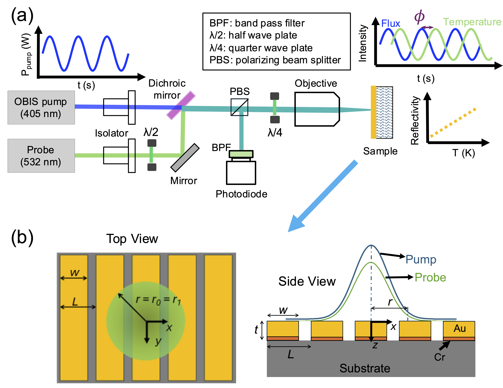
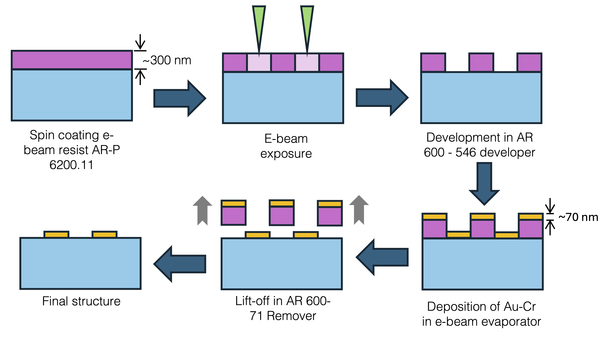
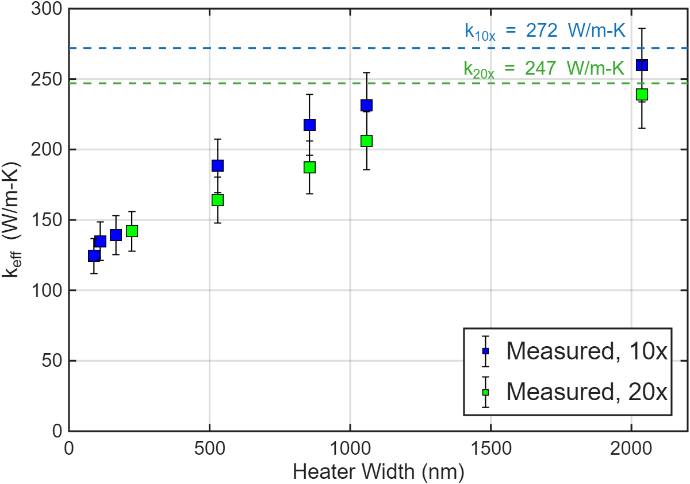

Doctoral research · Carnegie Mellon University · 2023–present
Experimental Characterization of Nanoscale Thermal Transport in UWBG Semiconductors
My thesis develops measurement and modeling approaches to understand how phonons carry heat in wide and ultrawide bandgap semiconductors—and what that means for thermal management in power and RF electronics.
Research overview
Thermal transport across scales
As semiconductor devices become smaller and operate at higher power densities, heat flow becomes a critical design constraint. My research combines frequency-domain thermoreflectance (FDTR), nanofabricated test structures, analytical transport models, and device-level simulation to investigate nanoscale thermal transport in Ga₂O₃, AlN, and AlGaN.
The work is organized around three linked questions: how crystal polymorph and feature size shape conductivity; how measurement geometry affects the thermal signal; and how phonon mean free paths influence heat dissipation in practical devices.
Chapter 1
Thermal transport in Ga₂O₃ polymorphs
I characterized thermal conductivity in γ-, β-, and κ-Ga₂O₃ thin films. The measurements revealed strong size-dependent conductivity in γ-Ga₂O₃ and slightly lower conductivity than β-Ga₂O₃, highlighting the importance of controlling γ-phase defects in β-Ga₂O₃ device structures.
For κ-Ga₂O₃, I established intrinsically low thermal conductivity with minimal size effects. These findings point to the need for high-conductivity substrates and alternative thermal management strategies for κ-Ga₂O₃ devices.

Connected polymorph-specific thermal behavior and size effects to practical substrate and materials considerations for emerging power devices.
Chapter 2
Nanoline grating metrology
I designed and fabricated gold nanoline grating structures on thick substrates using electron-beam lithography. These structures extend laser-based thermal metrology to a range of phonon mean free paths.
I also developed an analytical thermal transport model that explicitly accounts for finite laser spot size. The model was benchmarked against short-mean-free-path materials to validate its interpretation of FDTR measurements.



Au nanoline fabrication · FDTR · finite-spot analytical modeling · thermal transport validation
Chapter 3
Thermal conductivity accumulation in UWBG semiconductors
I am applying nanoline grating metrology to AlN and AlₓGa₁₋ₓN to extract thermal conductivity accumulation functions and resolve phonon mean-free-path contributions to transport.
The final step is translating suppressed effective thermal conductivity into device-level thermal simulations, improving hotspot temperature predictions for power and RF electronics.


Measurement-informed material properties can improve the thermal assumptions used in device design and hotspot analysis.
Related work
Publications & presentations
- “Low Cross-plane Thermal Conductivity of κ-Ga₂O₃ Thin Films” · S. Park, J. Tang, L. M. Porter, J. A. Malen · submitted to Applied Physics Letters
- “Size Effects and Temperature Dependence in the Thermal Conductivity of γ-Ga₂O₃ Films” · S. Park*, Y. Liang* et al. · Applied Physics Letters 126(23), 232201 (2025) · *Co-first authors
- “Analytical Framework for Interpreting FDTR Measurements of Nanoline Gratings under Finite Spot Illumination” · A. Pathak*, S. Park* et al. · arXiv preprint ↗ · *Co-first authors
- “Modeling Finite Laser Spot Effects in FDTR Measurements of Nanoline Gratings for Device Thermal Characterization” · S. Park, A. Pathak, J. H. McGaughey, J. A. Malen · submitted to IEEE ITherm 2026
Conference presentations
- “Modeling Finite Laser Spot Effects in FDTR Measurements of Nanoline Gratings for Device Thermal Characterization” · S. Park · IEEE ITherm 2026, Orlando, FL · poster and oral presentation
- “Size Effects and Temperature Dependence in Thermal Conductivity of γ-Ga₂O₃ Films” · S. Park · MRS Spring 2025, Seattle, WA · poster presentation
- “Measurement of Thermal Conductivity Accumulation Function in UWBG Semiconductors with Au Nanoline Gratings” · S. Park · ITCC/ITES 2026, Columbus, OH · oral presentation
Research collaborations